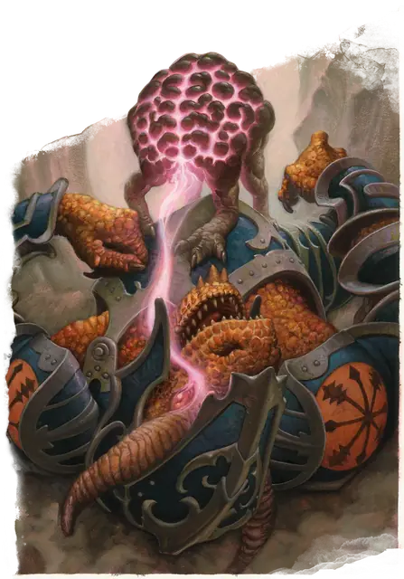

Пожиратель интеллекта
Intellect Devourer
Крошечная Аберрация, Принципиальная Злая

Класс Защиты 12 Инициатива +2 (12)
Хиты 28 (8к4 + 8)
Скорость 40 футов
| мод | спас | ||
|---|---|---|---|
| СИЛ | 6 | −2 | −2 |
| ЛОВ | 14 | +2 | +2 |
| ТЕЛ | 13 | +1 | +1 |
| мод | спас | ||
|---|---|---|---|
| ИНТ | 14 | +2 | +2 |
| МДР | 11 | +0 | +0 |
| ХАР | 10 | +0 | +0 |
Сопротивление урону Психический
Чувства пассивное Восприятие 12, Слепое зрение 60 футов
Языки Глубинная речь (понимает, но не говорит), Телепатия 60 фт.
Опасность 2 (450 опыта; БВ +2)
Особенности
Обнаружение интеллекта. Пожиратель интеллекта магическим образом ощущает присутствие любого существа со значением Интеллекта 3 и выше в пределах 300 футов от себя независимо от преград.
Действия
Мультиатака. Пожиратель интеллекта совершает одну атаку Когтями и использует Пожирание интеллекта.
Когти. Бросок рукопашной атаки: +4, досягаемость 5 фт. Попадание: 7 (2к4 + 2) Рубящего урона.
Пожирание интеллекта. Спасбросок Интеллекта: Сл 12, одно видимое пожирателем интеллекта существо в пределах 5 футов. Провал: 11 (2к10) Психического урона, и цель Ошеломлена до конца следующего хода пожирателя интеллекта.
Кража тела. Спасбросок Интеллекта: Сл 12, один Недееспособный Гуманоид или Зверь Маленького или Среднего размера с Хитами 10 или ниже в 5 футах. Провал: Пожиратель интеллекта поглощает мозг цели, телепортируется в её череп и захватывает контроль над телом. Находясь там, пожиратель интеллекта имеет Полное укрытие от атак и других эффектов, исходящих снаружи носителя. Пожиратель интеллекта сохраняет свои значения Интеллекта, Мудрости и Харизмы, а также знание Глубинной речи, телепатию и особенность Обнаружение интеллекта. Вся остальная статистика берётся у цели. Он знает всё, что знало существо, включая заклинания и языки.
Если тело носителя умирает, пожиратель интеллекта должен покинуть его. Пожиратель интеллекта также изгоняется, если цель восстанавливает поглощённый мозг заклинанием Желание. Потратив 5 футов перемещения, пожиратель интеллекта может добровольно покинуть тело, телепортируясь в ближайшее свободное пространство в пределах 5 футов. После этого тело умирает, если его мозг не восстановится до конца следующего хода пожирателя интеллекта.
Бонус мастерства +2
Среда обитания Подземье
Сокровища Отсутствуют
Пожиратель интеллекта
Питающийся мозгами похититель тел
Пожиратели интеллекта служат своим создателям — свежевателям разума, — поглощая мозги других существ и превращая опустошённые тела в покорных марионеток. Эти четвероногие мозги подстерегают разумных созданий, высасывая их мысли, пока те не лишатся рассудка. А затем, если жертва была Гуманоидом, забираются к ней в череп. Заполучив знания жертвы и контроль над её телом, пожиратели интеллекта выдают себя за тех, кого подменили, с безупречной точностью — и продвигают замыслы свежевателей разума всё дальше.